Unlike last year that started fiery, this year simply blended into what that previous year had brought. It brought too many things to the surface, and I had to understand these aspects of myself. It was sometimes extremely overwhelming, sometimes extremely lonely as if I was navigating my self layer by layer.
Year 2024 was the glimpse. Year 2025 was the overwhelming picture. Year 2026 was slow just like 2023 was. Building the stability again to move forward at an ever-increasing pace. Next two years are going to be crazy. I’ve been kinder to myself a little bit over this year as well. Lets see where life takes me. I feel like its going to be one hell of a ride, but I’m preparing myself to be as ready as I can be. In 2-5 years, I hope I’ll finally be the true “KarmaYogi” that Krishna talks about in the Bhagvad Geeta.
Let me start summarizing with books read, then clarify some mysterious stuff I was rambling about on X.
Books I completed this year
- Tripura Rahasya : Very deep explanations and metaphors on spirituality, being, self. Goes to expound a lot on other physical aspects of universe but I’d take it lightly for physical phenomenon. It explains the mind-body connection on a whole another level with interesting metaphors. There’s a story there of Hemalekha-Hemachuda where wife teaches her husband about mind, consciousness, breath, senses etc. in the form of another story.
- Leonardo Da Vinci by Walter Issacson: From this book I learned that Leonardo always looked at anything that moves with great reverence, and that reverence led him to great discoveries. I’ve always admired that guy as my role model, and with this book I’ve come to appreciate his painting skills even more.
- Ghumne Mech Mathi Andho Maanche : I’d never read Nepali Poem Series and Bhupi Serchan blew my mind. I came to appreciate that he had opinions even about Vietnam war right there on the book. Loved too many poems from this book.
- White Nights and Bobok ( Short Stories ) : Two short stories. I love how this guy is able to express almost everything in his head just like one would feel it. Its like a bomb of thoughts in your head and this guy knows how to lay it all into parts on the ground to show it to you. I loved how he put in breadcrumbs for future context to just create a good metaphor.
- Pagal Basti : I felt this book started on a curious note but then it didn’t deliver. It started sounding philosophical but didn’t touch anywhere significant. It could be because I’ve read too much spiritual philosophy to begin with. Anyway, I completed the book in anticipation but didn’t enjoy it that much. I loved the book Radha even when it didn’t try to be complex, yet gave a fresh new perspective on mythology too. I’d gladly recommend Radha over any Amish Tripathi’s Shiva Triology. I was expecting something similar given the fame of this book.
Books I re-read this year
- Siddhartha : This book took me by surprise. I came to feel that Siddhartha is more closer in feeling to Bhagavad Gita than to Buddha’s teachings. Honestly, it starts with Buddha and ends in Krishna for those who’ll read this more clearly. The names of characters were metaphorical too. Brilliant.
- The Prophet : This book is even more spiritual than what I could understand last time. Books like these grow with you.
Books I am still reading
- Skin in the Game : Really good snippets on tiny details that run the world. How small populations control something by being different and so on.
- The Man from The Future : Learning about how to think from the best minds is always a pleasure. Not just that but a culture and education that produces geniuses. There were certain schools that produced too many geniuses and that is an interesting research topic I’m fascinated with.
- Godel Escher Bach : Still reading it. I’m loving how intricately it ties up one after another concepts from Biology, Physics, Mathematics, Music and so on.
- From Third World to the First by Lee Kuan Yew : Starting to read it. I’ve watched interviews, but wanted to see if there’s a mental model that I can learn from here.
- Catch 22 : I am still in catch 22 of this book. I’ve a new reader with me now, maybe that will help me finish it off. Lets see.
- Laxmi Nibandha Sangraha : I loved how he feels deeply about everything when he writes as well. Some essays felt bland, but some are literally superb. Still in the middle of it.
Notes
- Didn’t read many books this year. Got really busy with projects. Bought more physical books that I’ve already read as well. I am starting to collect books for my personal library.
- Going to explain a little bit more about my future plans and some lessons. This is all about the start of a new journey. Sharing some lessons and my vision for the future.
Freedom
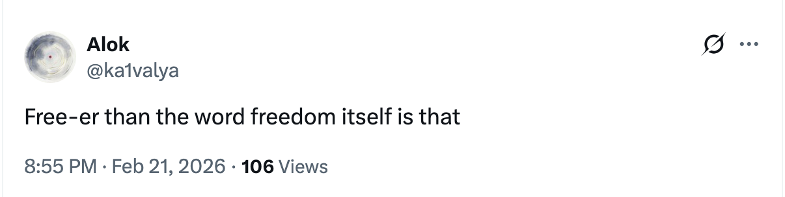
There is no freedom that anyone can impart to you. All that anyone can do is shatter some chains. Freedom is a heavily misunderstood word and has it’s roots connected to slavery and slavery alone. We have to understand that a truly free mind doesn’t comprehend slavery in any form. It’s free even in the darkest of caves. It’s free even when tortured or burned alive. Freedom word mostly pertains to physical freedom, which is misleading. “That you are” is actually free-er than the word freedom.
Tigers
This year, tigers have caught my fascination. I’ve grown fond of these beasts for their raw power and goofiness. Everything about it from its paw to its eyes demand reverence.
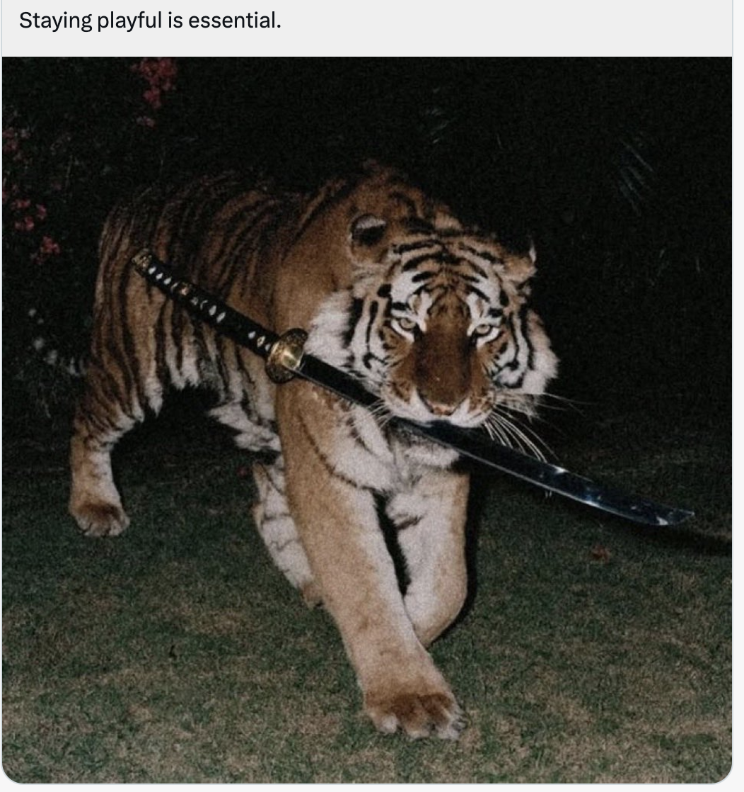
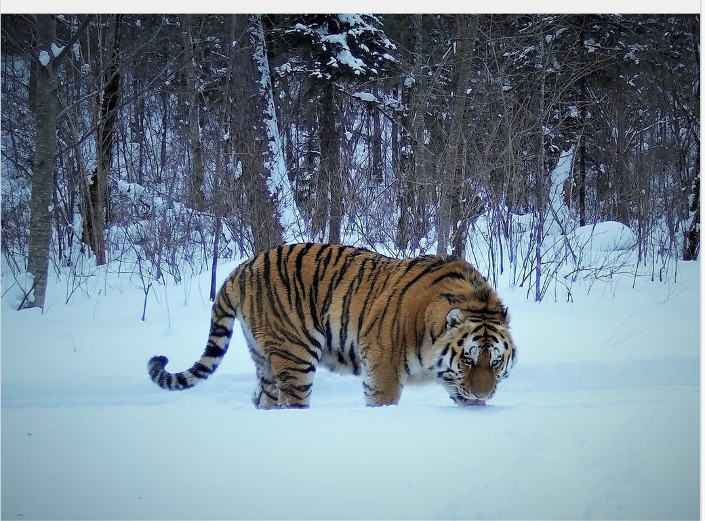
Wisdom
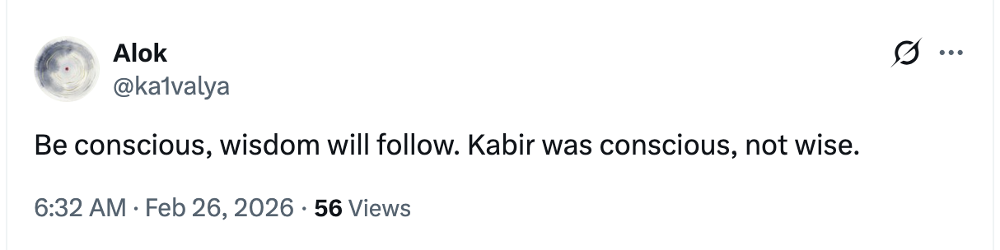
Many people confuse wisdom for accruing of words. You have to accrue and remember of course, but you have to be able to drop them as easily as you learned them. That which is wise is not bound to words however glorious and magestic they sound. When you learn to gather and unlearn words as easily, you accrue invisible wisdom.
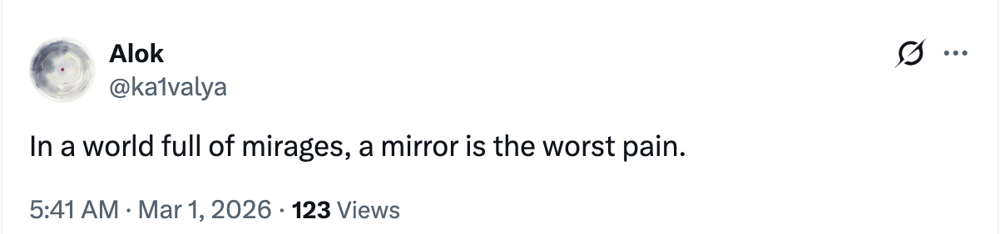
There were times when I didn’t understand anything about myself. I accepted what the world told me about myself. I never even knew what my inner voice was. Once I understood my inner self, it was much easier for myself internally. I became so much more peaceful and calm. Like untying of a knot internally. But as I untied myself, I realized that we all had knots. Initially I used to think I was the only one jumbled up. Most of us live in a mirage where we’ve learned to hide that knot. We have adapted to appearing spotless like a mirage to each other. A mirror shows you the knot in hopes that you can untie it too. But, that’s painful. And people become vulnerable and feel humiliated for being shown the knot. Had they looked at it without presumption, they would have learned . But we are so carried with our own pain, and that’s natural. So, as you learn, you’ve to learn to accept that expectation from the world will be that you act like a mirage. But don’t give up. You will pain everyone around you for being a mirror, but as far as my life has taught me, that’s temporary. I’ve seen everyone around me realize the truth given some time. Give them time to heal a little bit, and they will exactly know what the world did and what you did. That is an inevitable cost for being early.
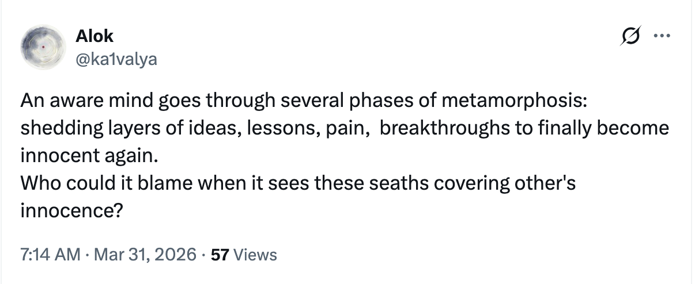
During the process of my metamorphosis, I have come to understand that we are very much alike to all the people around us in many ways. I feel like each person represents a life I could’ve had if I’d made a different decision. So, we are really close to each other in that way. So, I’ve felt a deeper connection to everyone after I’ve come to understand myself. And when you learn so much more, who can you really blame for anything? All the biases, struggles people have to go through, society they’re placed in and so on shaping each one differently. All you can do is feel deeper empathy towards everyone. Only mistake people do in empathy is that empathy can sometimes be wrathful as well just like manjushree has a fierce face to cut your illusions. See the second face from the top. Manjushree has a beautiful story about empathy too and how he got thousand hands.
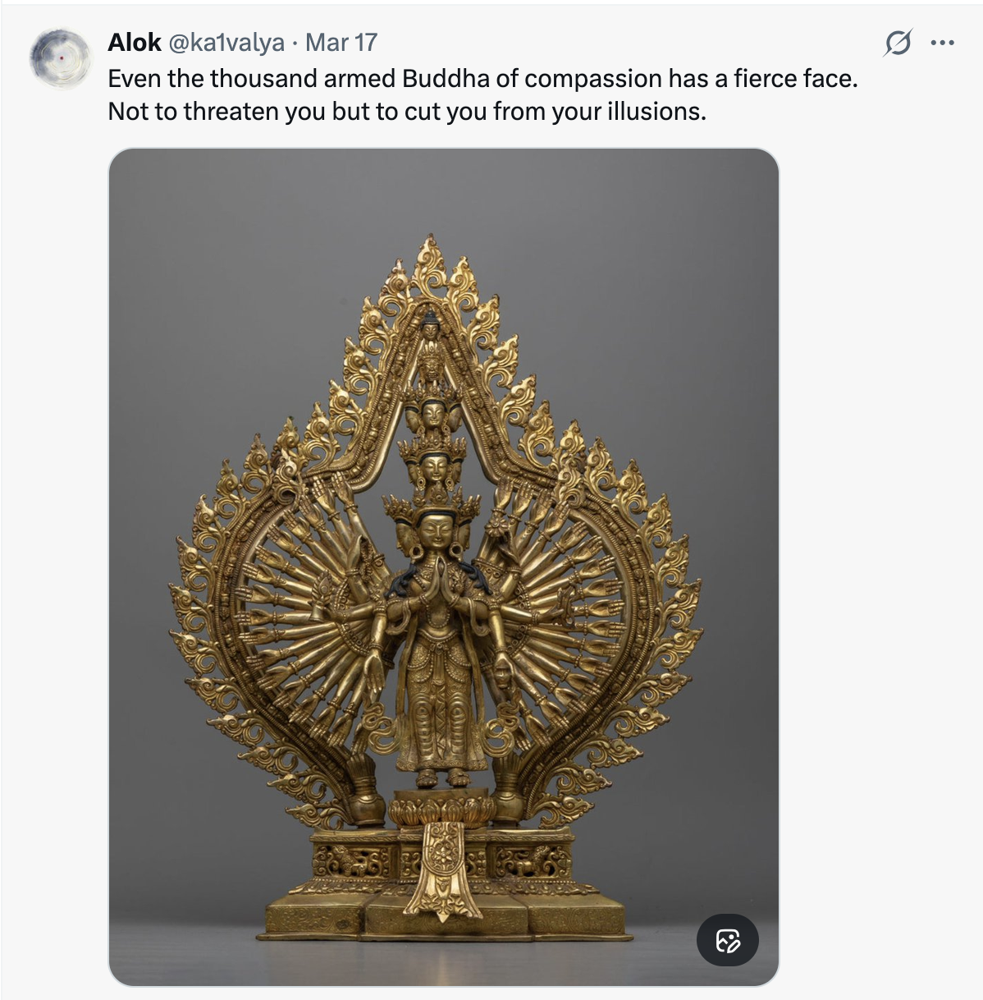
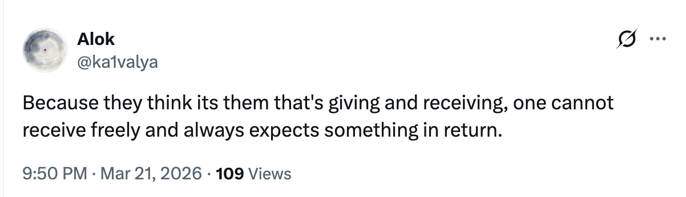
One must be able to receive freely to even give freely. One who keeps count while giving are bound to keep count of what they receive. Normally, coming from principle of fairness, people try to balance the count. Those, who know that there is nothing that’s theirs to give, will give without a tab.
Search
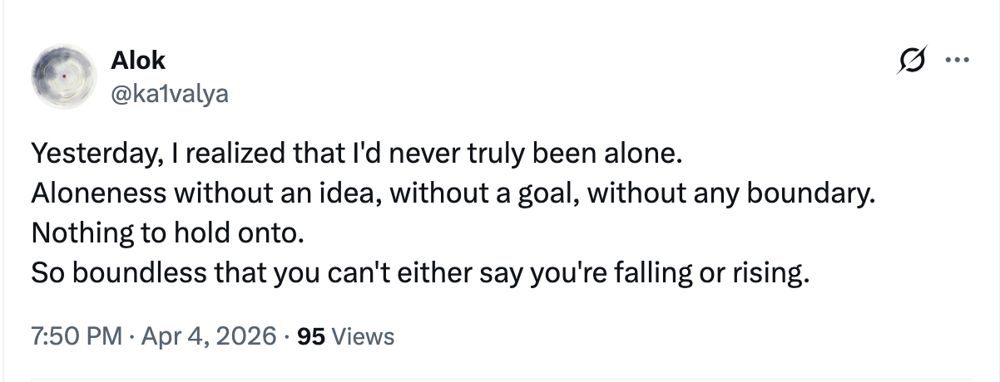
This is the peak of what happened this year. There’s so much more to being than we can all comprehend. Layer by layer, you open up to wider avenues of being. Realizations don’t last often, they give you a glimpse and pass away. Then, you have to strengthen your understanding so that you relieve of it. Emptiness has no symptoms, but it gets painted as one comes out of emptiness. Its scary if one fears it. Its pleasing if one is still.
Elections and Nepal
Elections happened in Nepal this year. The revolution which started last year got managed in a way and moved forward. We still have yet to see what it turns out to. I told this in my last year’s review:
“Participated in a national protest that too from the front. First time for everything I guess. Wrote another manifesto. No stone pelting or violence, but exactly opposite of that. Saw so much more than what I was expecting. That’s life. Felt all kind of emotions at the same time. Rightly so. I didn’t want to get involved so soon into Politics, but when time calls for it, I couldn’t let it pass. I did my part. Lets see what more I will do over time. I think there is a lot to come but lets stop at that for now.”
I have been sharpening my axe to understand more politics honestly. I knew that I wasn’t competent enough to figure international complexity. Now, I know what I need to do. Will reveal more in coming weeks.
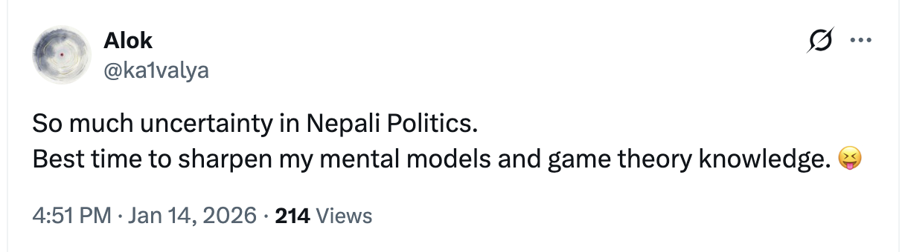
Now, I’ve decided to come forward and participate. I needed to take care of my work and a few other things before I could step in properly with an intention of going public. The number of people that have right vision and executive ideas to change the country are still not enough in Nepalese Politics. That’s why I want to at least try to make a bend in this continuum. That will be my attempt.
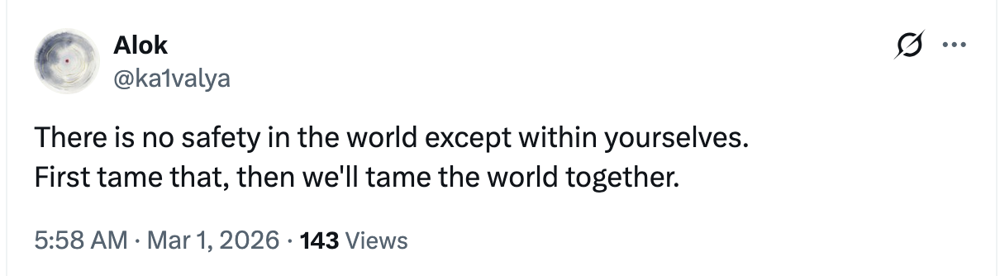
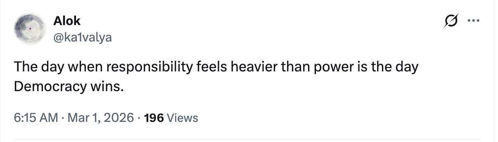
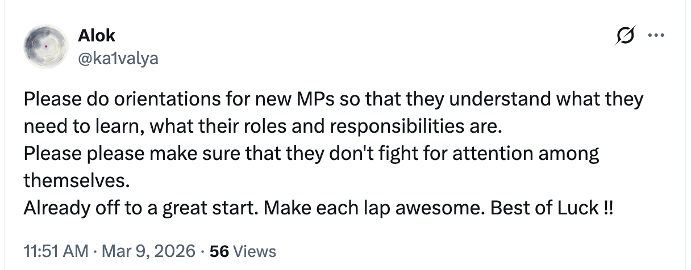
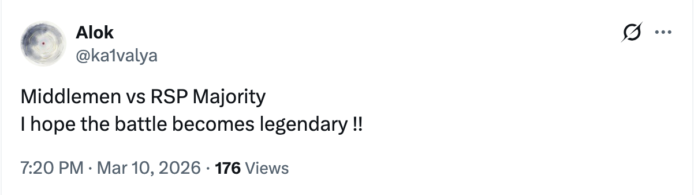
It seems that my mental models are on target really. What I’ve pointed out around 8-9 months ago as well as the day of the protest is actually the main problem in current scenario as well. With announced protests from political parties, I feel like I’ve come to get at least some feel for Politics now. This has helped me be more assured about my attempts for the future. I don’t come from a political background, so I want to be prepared as much as I can when I go at it. It’s time, and I feel ready.
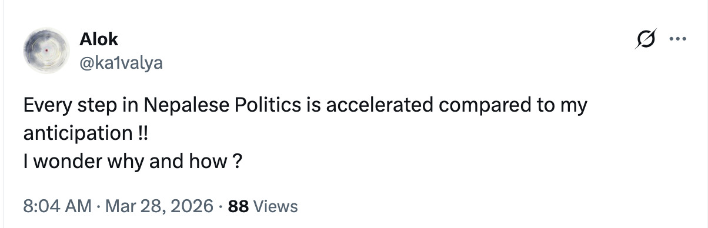
Current cases are just the tip of the iceberg of what is happening. Everything is going to blow up in great proportions going forward, so I think its important to act now and be able to steer it positively from my side as well.
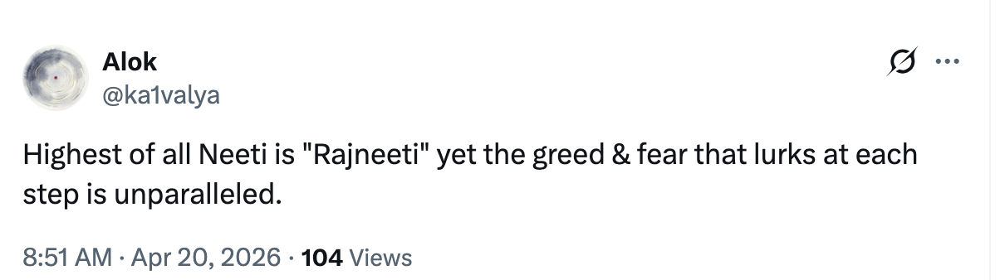
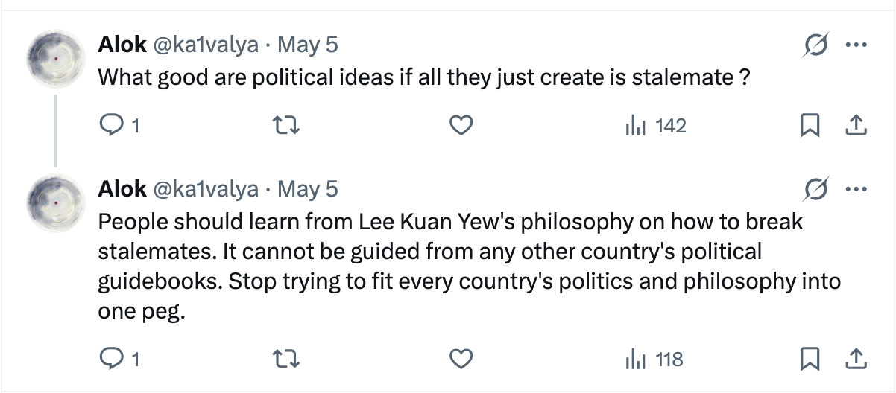
We need original thinkers and problem solvers who can break this stalemate. The solutions that work for a country which was a significant port might not work for us but the solutions that worked for a country with racial diversity can work for us. So, there are things we can copy and things we can’t. Discerning what can work is what we need good leaders for.
Time to be courageous and act on it. It’s not always about myself and my life.
Final Notes
Having been blessed with everything up to this day, I will act on my capabilities for the society that brought me to this day, and for the whole world some day soon. I hope I can bring light to your faces someday in whatever form I can. My goal is to see a world without fear one day. It’s going to be tough, but that doesn’t make it less important. Send comments and suggestions my way for anything I can work on and improve upon.